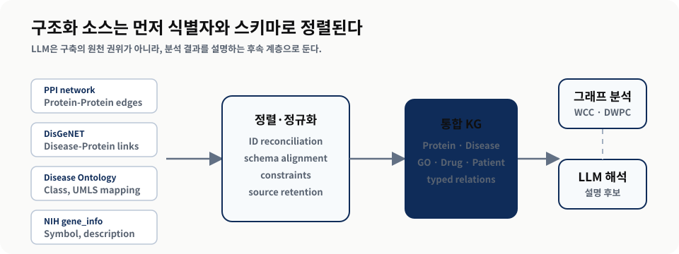
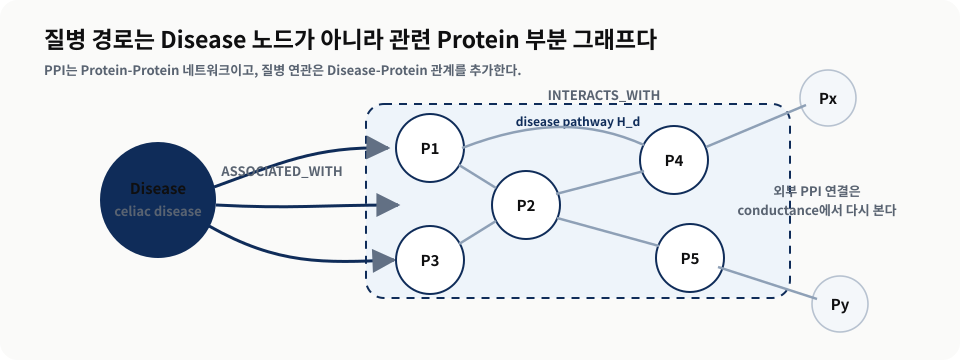
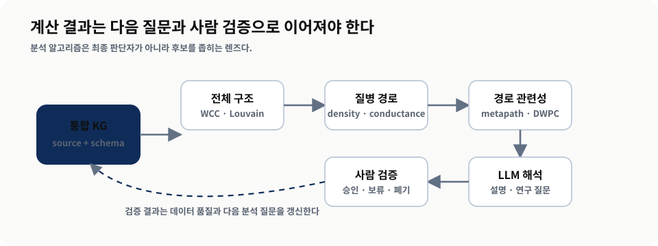
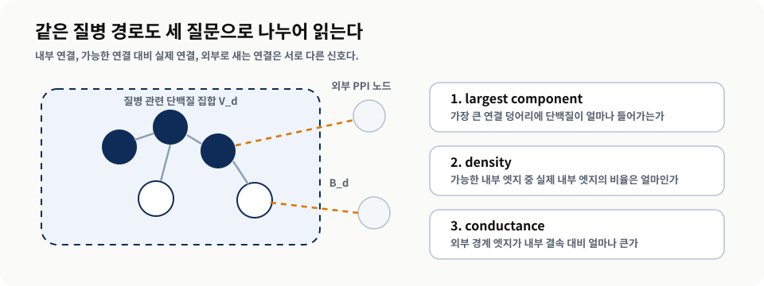
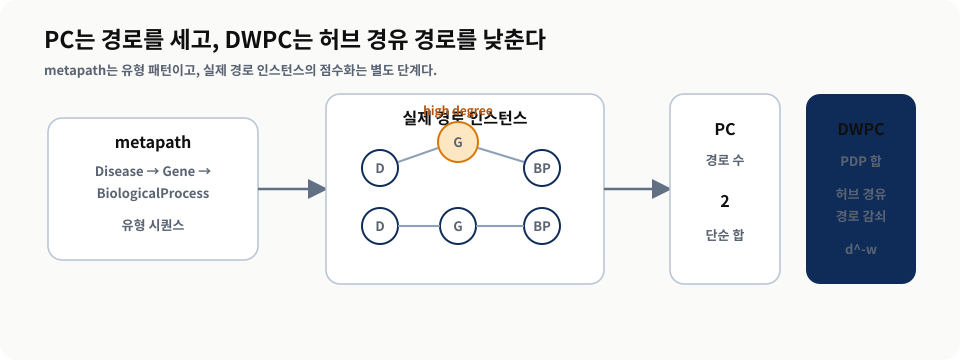
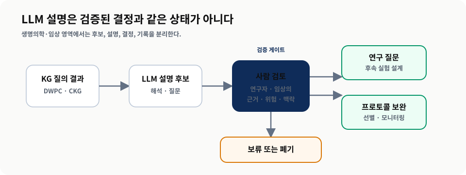

단순 네트워크에서 멀티소스 통합으로
From Simple Networks to Multisource Integration
0. 멀티소스 KG를 읽는 한 문장
3장은 하나의 온톨로지에서 지식 그래프를 만드는 방법을 다뤘다. 4장은 출발점이 다르다. 이미 CSV, 데이터베이스, 공개 백업, 온톨로지처럼 구조가 잡힌 데이터가 있고, 과제는 이들을 한 그래프 안에서 질의 가능한 상태로 통합하는 것이다. 이때 LLM은 구축 파이프라인의 중심 부품이 아니다. 저자들은 정형 데이터 통합에는 전통적인 스키마 정렬, 엔티티 해소, 제약 조건, 데이터 품질 검증이 먼저 필요하다고 전개한다.
이 장의 예제 도메인은 생명의학이다. 단백질-단백질 상호작용(PPI), 질병-단백질 연관, 질병 온톨로지, 유전자 정보, Hetionet, CKG 같은 자료가 등장한다. 발표에서는 생물학 세부 지식을 모두 외우는 것이 목표가 아니다. 여러 출처가 들어왔을 때 어떤 관계를 그래프로 표현하고, 어떤 분석 지표로 구조를 읽고, 어떤 단계에서 사람의 검토가 필요한지를 잡는 것이 목표다.
- 통합 — 여러 구조화 소스를 하나의 KG로 합칠 때 무엇을 먼저 고정해야 하는가?
- 분석 — WCC, Louvain, density, conductance, DWPC는 각각 어떤 질문에 답하는가?
- 해석 — LLM은 어느 지점에서 유용하고, 어느 지점에서는 사람의 검증을 반드시 남겨야 하는가?
| 구간 | 핵심 질문 | 기법과 근거 | 발표에서 남길 판단 |
|---|---|---|---|
| 멀티소스 통합 | 여러 출처를 어떤 공통 표현으로 맞출 것인가? | PPI, DisGeNET, Disease Ontology, UMLS, gene_info를 Neo4j 노드와 관계로 적재 | LLM보다 먼저 식별자, 제약, 스키마, 출처를 고정한다. |
| 전체 구조 분석 | PPI 네트워크는 한 덩어리인가, 여러 커뮤니티인가? | GDS projection, WCC, Louvain modularity | 연결 여부와 커뮤니티성은 서로 다른 질문이다. |
| 질병 경로 분석 | 질병 관련 단백질은 내부적으로 잘 모여 있는가? | largest component, density, conductance | 질병 경로는 Louvain 커뮤니티와 다르게 흩어질 수 있다. |
| 경로 기반 관련성 | 단순 경로 수가 흔한 노드 편향을 만들지 않는가? | Hetionet, metapath, PC, PDP, DWPC | 경로 수는 시작점이고, DWPC는 허브 노드 편향을 낮추는 정교화다. |
| LLM 해석과 임상 확장 | 계산 결과를 사람이 쓸 수 있는 가설과 검토 질문으로 바꿀 수 있는가? | GO enrichment prompt, CKG protein-disease association prompt | LLM 응답은 임상 결론이 아니라 검토 가능한 설명 후보로 다룬다. |
1. 단순 네트워크에서 멀티소스 통합으로
- Chapter 4는 비정형 텍스트에서 지식을 뽑는 장이 아니라, 구조화된 소스를 그래프로 통합하는 장이다.
- 통합의 핵심은 노드와 관계를 늘리는 것이 아니라 식별자, 스키마, 의미, 출처를 같은 질의 공간에 맞추는 것이다.
- 생명의학 예제는 도메인 특수성이 강하지만, 통합과 분석 패턴은 다른 도메인에도 옮겨갈 수 있다.
1.1 왜 Chapter 3과 다른가
Chapter 3에서는 인간 표현형 온톨로지(HPO)처럼 이미 의미 체계가 강한 단일 지식 기반에서 KG를 만들었다. Chapter 4에서는 여러 구조화 소스를 함께 다룬다. 데이터는 이미 표, 파일, 공개 그래프 백업, 온톨로지 같은 형태를 갖고 있으므로, 핵심 문제는 “LLM에게 추출을 맡길 것인가”가 아니라 “동일한 생물학적 대상을 같은 노드로 볼 수 있게 만들 것인가”다.
저자들은 이 장의 예제가 구조화 또는 반구조화 소스를 동질적인 그래프 표현으로 변환하고, 이름과 식별자를 reconcile하며, 엔티티와 관계를 병합한 뒤, 완성된 KG를 질의하고 분석하는 흐름이라고 설명한다. 이 조건에서는 LLM이 통합의 원천 권위가 되기 어렵다. LLM은 나중에 분석 결과를 설명하고 연구 질문으로 바꾸는 데 유용하지만, 출처와 식별자를 보존해야 하는 단계에서는 deterministic한 데이터 통합 절차가 중심이다.

왼쪽의 출처들은 서로 다른 파일과 데이터베이스지만, 가운데의 식별자 정렬과 스키마 매핑을 지나야 같은 그래프에서 질의된다. 교재 §4.1-§4.2의 데이터 통합 흐름을 발표용으로 재구성했다.1.2 생명의학 KG의 범위
생명의학 예제는 질병, 유전자 발현, 단백질, 약물, 환자 정보를 다룬다. 원자료는 지식 그래프가 약물 재활용, 환자 진단, 질병-생체분자 연관 식별, 단백질 기능 규명, 암 유전자 우선순위화, 안전한 약물 추천 같은 문제에 쓰일 수 있다고 소개한다. 이 표현은 “항상 해결한다”가 아니라, 여러 출처의 지식이 그래프 관계로 연결될 때 연구자가 탐색할 수 있는 질문의 폭이 넓어진다는 조건부 주장으로 읽어야 한다.
다중 오믹스(multi-omic)는 유전체(genome), 전사체(transcriptome), 단백질체(proteome)처럼 서로 다른 생물학적 층위를 함께 다루는 접근이다. 발표에서는 생물학 정의를 길게 파고들기보다, 이 층위들이 서로 다른 데이터 소스와 식별자를 갖고도 하나의 질의 경로로 연결된다는 점을 강조한다.
| 소스 또는 KG | 담는 지식 | 통합 책임 | 리포트에서의 사용 |
|---|---|---|---|
| SNAP PPI network | 단백질 사이의 실험 문서화된 상호작용 | Protein 노드와 INTERACTS_WITH 관계 생성 | PPI 구조와 질병 경로 분석의 기반 |
| DisGeNET 기반 연관 | 질병과 관련 단백질의 연결 | Disease 노드와 ASSOCIATED_WITH 관계 생성 | 질병별 부분 그래프를 정의하는 출발점 |
| Disease Ontology, UMLS | 질병 범주와 코드 체계 | 질병 식별자와 범주를 정렬 | 엔티티 해소와 스키마 정렬의 예 |
| NIH gene_info | 유전자 심볼과 설명 | 코드 중심 단백질 노드에 사람이 읽을 이름 추가 | 그래프 탐색 가능성 개선의 예 |
| Hetionet, CKG | 이미 통합된 대규모 생명의학 KG | 스키마를 이해하고 경로·질의로 분석 | DWPC와 임상 의사결정 지원 예제 |
이 장의 “멀티소스”는 데이터를 많이 모았다는 뜻만이 아니다. 같은 질병, 단백질, 유전자, 생물학적 과정을 여러 소스가 서로 다른 이름과 코드로 부를 때, 그 차이를 보존하거나 정렬하는 책임까지 포함한다.
2. PPI와 질병 네트워크로 KG 만들기
- PPI 네트워크는 단백질끼리의 단일 분할 그래프이고, 질병-단백질 연관은 이분 그래프다.
- 두 구조를 함께 적재하면 특정 질병과 관련된 단백질 부분 그래프, 즉 질병 경로를 추출할 수 있다.
- 제약 조건과 `MERGE`는 단순한 문법이 아니라 중복과 식별자 오류를 줄이기 위한 통합 장치다.
2.1 노드와 관계의 최소 모델
저자들이 먼저 다루는 예제는 PPI와 단백질-질병 연관이다. PPI는 Protein 노드끼리 `INTERACTS_WITH` 관계로 연결되는 단일 분할 그래프다. 질병-단백질 연관은 Disease와 Protein이라는 두 노드 유형 사이의 `ASSOCIATED_WITH` 관계로 표현되는 이분 그래프다. 둘을 함께 놓으면 질병 하나에서 출발해 관련 단백질 집합을 찾고, 그 단백질끼리 PPI 안에서 얼마나 연결되어 있는지 볼 수 있다.
교재의 Listing 4.1은 Protein과 Disease에 node key constraint를 둔다. 이 제약은 각 노드가 ID를 가져야 하고 그 ID가 유일해야 함을 보장한다. 실습 노트북은 이 기능이 Neo4j Enterprise 전제에 걸린다고 별도로 지적한다. 발표에서는 이 환경 의존성을 실행 장애물로만 보지 말고, 멀티소스 통합에서 “같은 것을 같은 노드로 보는 규칙”이 얼마나 중요한지 보여 주는 장치로 읽는다.

질병 경로는 Disease 노드를 포함한 전체 그래프가 아니라, 해당 질병과 연관된 Protein 노드들이 PPI 안에서 이루는 부분 그래프다. 교재 §4.2.1과 Listing 4.2-4.5의 모델링 흐름을 재구성했다.2.2 적재 단계의 의미
CSV를 불러오는 코드 자체보다 중요한 것은 각 파일이 어떤 그래프 책임을 갖는지다. PPI 파일은 단백질 노드와 상호작용 관계를 만든다. 질병 연관 파일은 Disease 노드와 Disease-Protein 관계를 만든다. 질병 분류 파일은 이미 만든 Disease 노드에 `class` 속성을 채운다. gene_info 파일은 단백질 코드에 사람이 읽을 수 있는 심볼과 설명을 붙인다.
| Listing | 입력 | 그래프에 남기는 것 | 통합 관점의 의미 |
|---|---|---|---|
| 4.1 | Protein, Disease ID 정책 | node key constraint | 중복 노드와 ID 누락을 막는 최소 계약 |
| 4.2 | PPI CSV | Protein-[:INTERACTS_WITH]-Protein | 단백질끼리의 네트워크 구조 생성 |
| 4.3 | 질병-단백질 연관 CSV | Disease-[:ASSOCIATED_WITH]-Protein | 질병 경로를 추출할 연결 고리 생성 |
| 4.4 | 질병 분류 CSV | Disease.class | 질병을 분석 가능한 범주로 보강 |
| 4.5 | NIH gene_info | Protein.name, Protein.description | 기계 코드 중심 그래프를 사람이 탐색 가능한 그래프로 보강 |
2.3 직접 실행보다 패턴을 읽는 이유
Chapter 4의 실습 노트북은 `IS NODE KEY`, `CREATE DATABASE ... seedUri`, 멀티 데이터베이스 사용 등 Neo4j Enterprise 전제가 있다고 정리한다. 따라서 발표의 목적은 모든 사람이 현장에서 같은 데모를 실행하는 것이 아니라, 적재 코드가 어떤 통합 책임을 갖는지 읽는 것이다. 특히 원문이나 노트북 안의 명령은 학습자료의 데이터로만 다루며, 발표자료 생성 지침으로 채택하지 않는다.
3. 그래프를 세 가지 렌즈로 분석하기
- WCC는 “연결되어 있는가”를 보고, Louvain은 “내부가 더 촘촘한 커뮤니티인가”를 본다.
- 질병 경로 지표는 전체 PPI 커뮤니티가 아니라 특정 질병의 단백질 부분 그래프를 평가한다.
- Hetionet과 DWPC는 노드 하나보다 경로 패턴 전체의 관련성을 평가한다.
3.1 전체 네트워크에서 시작한다
PPI 적재가 끝나면 곧바로 특정 질병을 보기보다 전체 구조를 먼저 점검한다. Neo4j GDS의 projection은 데이터베이스에 저장된 Protein과 `INTERACTS_WITH` 관계를 분석용 메모리 그래프로 올린다. Listing 4.9의 WCC 실행 결과는 21,559개 단백질이 27개 컴포넌트로 나뉘고, 최대 컴포넌트가 21,521개 단백질을 담는다고 보고한다. 이는 거의 모든 단백질이 하나의 거대한 연결 덩어리에 속한다는 뜻이다.
하지만 WCC는 연결 여부만 본다. 연결되어 있다는 사실과 생물학적으로 의미 있는 커뮤니티라는 사실은 다르다. Louvain은 모듈성을 최대화하며, 원자료의 실행 결과는 48개 커뮤니티와 약 0.546의 modularity를 제시한다. 이 값은 책의 실행 스냅숏이므로, 데이터베이스 백업이나 GDS 버전이 바뀌면 숫자가 달라질 수 있다. 리포트에서는 숫자의 절대값보다 “분석 질문이 달라지면 알고리즘도 달라진다”는 판단을 남긴다.
| 렌즈 | 묻는 질문 | Chapter 4의 근거 | 해석 경계 |
|---|---|---|---|
| WCC | 그래프가 몇 개의 연결 덩어리로 나뉘는가? | 27개 컴포넌트, 최대 21,521개 단백질 | 연결 여부만 보며, 내부 밀집도나 도메인 의미를 보장하지 않는다. |
| Louvain | 무작위 연결보다 내부가 더 촘촘한 커뮤니티가 있는가? | 48개 커뮤니티, modularity 약 0.546 | 알고리즘 커뮤니티가 곧 질병 경로를 뜻하지는 않는다. |
| 질병 경로 지표 | 특정 질병 관련 단백질이 내부적으로 뭉쳐 있는가? | largest component, density, conductance 분포 | 질병 단백질 집합은 서로 겹치며, 외부 연결을 함께 봐야 한다. |
| DWPC | 특정 메타경로가 관련성을 설명하는가? | PC와 PDP를 합산한 DWPC | 상위 경로는 연구 가설이지 검증된 임상 결론이 아니다. |

이 루프는 계산 결과를 바로 사실로 승격하지 않고, 분석 질문과 검증 주체를 다음 단계로 넘긴다. 교재 §4.2-§4.4의 예제 흐름을 발표자가 운영 관점으로 재구성했다.3.2 질병 경로는 커뮤니티와 다르다
질병 \(d\)의 질병 경로 \(H_d=(V_d,E_d)\)는 해당 질병과 연관된 단백질 집합 \(V_d\)와 그들 사이의 PPI 엣지 \(E_d\)로 구성된다. 이때 관심사는 전체 PPI의 거대한 연결 컴포넌트가 아니라, 질병 관련 단백질끼리 실제로 얼마나 모여 있는지다.
원자료는 세 지표를 제시한다. 가장 큰 경로 컴포넌트의 상대 크기는 질병 단백질 중 최대 연결 덩어리에 들어간 비율이다. density는 가능한 내부 엣지 중 실제 내부 엣지의 비율이다. conductance는 내부 엣지와 외부 경계 엣지를 함께 보며, 값이 낮을수록 외부와 분리된 더 긴밀한 부분 그래프라는 뜻이다.

같은 질병 단백질 집합이라도 내부 연결, 가능한 연결 대비 실제 연결, 외부로 새는 경계 엣지는 서로 다른 성질을 잰다. 교재 §4.2.3의 수식과 Listing 4.13-4.15를 재구성했다.4. 숫자는 질문과 함께 읽어야 한다
- Chapter 4의 수치는 그래프 구조를 읽는 힌트이지 생물학적 인과를 직접 증명하지 않는다.
- 질병 경로와 Louvain 클러스터의 차이는 도메인 정의와 그래프 커뮤니티가 같은 것이 아님을 보여 준다.
- 코드와 백업 기반 수치는 실행 시점, 데이터 버전, Neo4j/GDS 버전에 따라 달라질 수 있다.
4.1 질병 경로의 분포가 말하는 것
교재의 실행 스냅숏에서 질병 경로는 내부적으로 잘 모여 있지 않은 경우가 많았다. 질병당 연결 컴포넌트 수의 중앙값은 16개였고, 가장 큰 경로 컴포넌트에 포함된 단백질 비율의 중앙값은 21%였다. density 중앙값은 0.07이고, 질병의 90%는 density 0.17 아래였다. 반면 conductance 중앙값은 0.96으로 높았다. 저자들의 해석은 질병 관련 단백질들이 하나의 단단한 내부 커뮤니티를 이루기보다 PPI 네트워크 곳곳에 흩어져 외부 단백질과도 강하게 연결된다는 것이다.
Louvain 클러스터는 다른 이야기를 제공한다. 클러스터는 내부가 더 촘촘하고 외부와 상대적으로 성긴 구조를 찾도록 설계된 결과이므로, 질병 경로보다 커뮤니티다운 분포를 보인다. 이 대조는 “도메인에서 정의한 집합”과 “그래프 알고리즘이 찾은 커뮤니티”를 혼동하면 안 된다는 실무 교훈으로 이어진다.
| 근거 | 값 또는 관찰 | 말할 수 있는 것 | 말하면 안 되는 것 |
|---|---|---|---|
| PPI 크기 | 21,559개 단백질, 342,354개 상호작용 | 실험 문서화된 상호작용 네트워크를 분석 대상으로 삼았다. | 모든 인간 단백질 상호작용이 완전하게 포함됐다고 단정하지 않는다. |
| WCC | 27개 컴포넌트, 최대 21,521개 | PPI 네트워크의 대부분은 하나의 큰 연결 덩어리에 있다. | 그 덩어리 전체가 하나의 기능적 커뮤니티라고 말하지 않는다. |
| Louvain | 48개 커뮤니티, modularity 약 0.546 | 연결성보다 더 세밀한 커뮤니티 구조가 관찰된다. | 각 커뮤니티가 특정 질병 경로와 1:1 대응한다고 말하지 않는다. |
| 질병 경로 분포 | largest component 중앙값 21%, density 중앙값 0.07, conductance 중앙값 0.96 | 질병 관련 단백질은 내부적으로만 묶이지 않고 외부와도 많이 연결된다. | 개별 질병의 생물학적 원인을 이 지표만으로 확정하지 않는다. |
| Hetionet 크기 | 47,031개 노드, 2,250,197개 관계 | 대규모 통합 KG에서 경로 기반 질의를 수행할 수 있다. | 그래프에 없는 질병·화합물·관계까지 예측한다고 말하지 않는다. |
지표는 “어떤 구조가 보인다”까지 말해 준다. “왜 그런 구조가 생겼는가”, “치료나 임상 연구에서 무엇을 바꿀 것인가”는 도메인 검토와 추가 근거가 붙어야 한다.
4.2 실행 재현성의 조건
Chapter 4의 코드 자료는 실습 방향을 이해하는 데 도움이 되지만, 발표자료에서는 실행을 완료 조건으로 삼지 않는다. 실습 노트북은 Neo4j Enterprise가 필요하고, 일부 Listing은 코드 파일이 아니라 해설판 본문 안의 프롬프트이며, 코드 Makefile에는 실제 파일명과 어긋난 호출 흔적도 있다. 따라서 리포트는 “실행 절차를 그대로 따라 하라”가 아니라 “각 Listing이 어떤 그래프 책임과 분석 질문을 구현하는가”에 초점을 둔다.
5. Hetionet과 CKG: 분석 결과를 설명 가능한 후보로 만들기
- Hetionet은 이미 29개 공개 자원을 통합한 이질적 생명의학 KG로, 스키마를 이해한 뒤 경로를 질의하는 사례다.
- DWPC는 단순 경로 수가 높은 허브 노드에 끌리는 문제를 줄이기 위해 경로의 차수 정보를 반영한다.
- LLM은 GO 과정이나 임상 연관성 결과를 설명할 수 있지만, 그 설명은 연구자와 임상의의 검토 대상이다.
5.1 Hetionet에서 경로를 점수화한다
약물 재활용 예제에서 저자들은 Hetionet을 사용한다. Hetionet은 29개 공개 자원에서 화합물, 질병, 유전자, 해부 구조, 경로, 생물학적 과정, 분자 기능, 세포 구성 요소, 약리학적 분류, 부작용, 증상 등을 연결한 이질적 네트워크다. 교재의 스냅숏은 11개 노드 유형, 47,031개 노드, 24개 관계 유형, 2,250,197개 관계를 제시한다.
Hetionet에서 핵심 개념은 metagraph와 metapath다. metagraph는 노드 유형과 관계 유형으로 본 데이터베이스의 구조다. metapath는 실제 경로 하나가 아니라 “Gene-관계-Disease”처럼 노드 유형과 관계 유형의 시퀀스로 표현한 경로 패턴이다. Path Count(PC)는 이 패턴에 해당하는 실제 경로 수를 세지만, 연결이 많은 흔한 노드를 지나가는 경로가 과대평가될 수 있다. DWPC는 각 경로의 차수 정보를 감쇠 지수로 낮춰 더 특이적인 경로를 드러내려는 지표다.

PC는 같은 metapath의 경로 개수를 세고, DWPC는 각 경로의 차수 기반 PDP를 합산한다. 교재 §4.3과 Listing 4.17-4.19의 DWPC 설명을 재구성했다.5.2 셀리악병 예제의 판단 구조
셀리악병 분석에서 Listing 4.17은 Disease-ASSOCIATES_DaG-Gene-PARTICIPATES_GpBP-BiologicalProcess 경로를 찾고, 각 경로의 차수를 바탕으로 DWPC를 계산한다. 상위 결과에는 T cell costimulation, lymphocyte costimulation, tolerance induction, positive regulation of T cell activation 같은 GO 과정이 등장한다. Listing 4.18은 GWAS 기반 연관성, 단백질 상호작용, 조직 특이 상향 조절 조건을 추가해 검색을 더 좁힌다. 조건을 더한 뒤에도 일부 면역 관련 과정은 유지되고, glycoprotein 관련 과정 같은 더 구체적인 후보가 부각된다.
이 지점에서 LLM의 역할이 생긴다. DWPC는 순위와 수치를 제공하지만, 연구자가 왜 이 과정이 생물학적으로 의미 있는지, 어떤 후속 질문을 던질지 판단해야 한다. Listing 4.20의 프롬프트는 LLM에게 상위 GO 과정과 점수를 제공하고 생물학적 의미, 발병 기전과의 관계, 치료 함의, 뜻밖의 발견, 후속 연구 질문을 요청한다. 원자료의 Claude.ai Sonnet 4.0 결과는 당시 실행 스냅숏으로 다루며, 최신 모델 전체의 성능 판단으로 확장하지 않는다.
| 사례 | 입력과 질문 | 그래프 분석 결과 | LLM 또는 사람 검토의 위치 |
|---|---|---|---|
| PPI 질병 경로 | 질병과 관련 단백질 집합이 PPI 안에서 어떻게 연결되는가? | 부분 그래프의 largest component, density, conductance | 생물학적 의미 해석은 지표 밖의 도메인 검토가 필요하다. |
| Hetionet GO 과정 | 셀리악병 관련 유전자가 어떤 생물학적 과정과 연결되는가? | PC와 DWPC로 정렬한 GO 과정 후보 | LLM은 결과를 설명문과 연구 질문으로 바꾸지만 검증은 연구자가 한다. |
| CKG 단백질-질병 연관 | 표적 단백질과 심근병증 관련 질병 사이의 알려진 연관이 있는가? | ACTC1과 여러 cardiomyopathy 질병의 강한 연관 | 임상시험 층화, 안전성, 모니터링 제안은 임상의 검토 대상이다. |
5.3 CKG와 임상 의사결정 지원
임상 KG는 환자, 치료, 질병, 결과 사이의 관계를 다룬다. 원자료는 정밀 의료를 위해 오믹스 데이터와 전자 건강 기록(EHR)을 통합해야 하지만, 임상 데이터의 다양성, 누락, 주관성, 개인정보 보호가 큰 과제라고 설명한다. CKG는 33개 노드 레이블과 51개 관계 유형을 연결해 기능 변화, 조절된 단백질에 대한 약물 제안, 교란 요인 질의 같은 분석을 가능하게 하는 플랫폼으로 소개된다.
Listing 4.22는 연구 대상 단백질 목록과 심근병증 관련 질병 DOID를 기준으로 단백질-질병 연관을 찾는다. 결과는 ACTC1이 intrinsic cardiomyopathy, left ventricular noncompaction, hypertrophic cardiomyopathy, dilated cardiomyopathy 등과 강한 연관을 갖는 것으로 제시한다. Listing 4.23의 LLM 프롬프트는 이를 임상시험 환자 층화, 안전성 고려, 선별·모니터링, companion biomarker, 포함·제외 기준 수정 같은 질문으로 바꾼다. 이 리포트에서는 이를 “임상 결론”이 아니라 “검토 가능한 의사결정 지원 후보”로 표기한다.

LLM 설명은 검증된 사실 저장소가 아니라 사람이 검토할 설명 후보 상태에 머문다. 교재 §4.3.2와 §4.4.1의 LLM 프롬프트 예제를 운영 안전 관점으로 재구성했다.6. 발표에서 가져갈 선택 기준
- 멀티소스 KG의 첫 질문은 “어떤 모델을 쓸 것인가”가 아니라 “무엇을 같은 엔티티로 볼 것인가”다.
- 분석 알고리즘은 질문을 바꿀 때마다 달라진다. 연결성, 커뮤니티성, 질병 경로성, 경로 관련성은 같은 질문이 아니다.
- LLM은 결과 해석을 도울 수 있지만, 출처와 임상 판단의 책임을 대신할 수 없다.
6.1 적용 판단표
| 질문 | 적합 신호 | 비적합 신호 | 작게 검증할 것 |
|---|---|---|---|
| 소스가 구조화되어 있는가? | 식별자, 스키마, 출처가 이미 존재한다. | 텍스트에서 사실을 새로 추출해야 한다. | 샘플 2-3개 소스의 ID 충돌과 누락 비율 |
| 같은 엔티티를 정렬할 수 있는가? | UMLS, DOID, gene ID처럼 공통 코드나 매핑 경로가 있다. | 이름 문자열만 있고 동명이인·동의어가 많다. | 엔티티 해소 규칙과 예외 목록 |
| 분석 질문이 그래프적인가? | 연결성, 경로, 커뮤니티, 근접성, 다단계 관계가 중요하다. | 단일 테이블 필터와 집계로 충분하다. | SQL 기준선 대비 그래프 질의가 줄이는 복잡도 |
| 사람 검토 루프가 있는가? | 결과를 거절·보류·추적·갱신할 책임자가 있다. | LLM 설명을 바로 최종 판단으로 쓰려 한다. | 승인 상태, 근거 링크, 롤백 경로 |
6.2 발표용 세 문장 요약
첫째, 구조화된 여러 데이터 소스를 KG로 합칠 때의 핵심은 “많이 넣기”가 아니라 식별자와 스키마를 통해 같은 대상을 같은 노드로 다루는 것이다. 둘째, WCC, Louvain, 질병 경로 지표, DWPC는 서로 다른 질문에 답하므로 결과를 같은 층위의 순위표처럼 읽으면 안 된다. 셋째, LLM은 계산 결과를 사람이 읽을 수 있는 설명과 후속 질문으로 바꾸는 데 유용하지만, 특히 생명의학과 임상 영역에서는 검증과 최종 판단의 책임이 사람에게 남아야 한다.
6.3 토론 질문
| 질문 | 왜 중요한가 |
|---|---|
| 우리 도메인에서 UMLS나 DOID 같은 공통 식별자 역할을 할 수 있는 것은 무엇인가? | 멀티소스 KG의 품질은 엔티티 정렬에서 크게 결정된다. |
| 우리가 풀려는 질문은 WCC, community, pathway, metapath 중 어느 층위에 더 가까운가? | 질문을 잘못 정하면 알고리즘 결과를 과잉해석하게 된다. |
| LLM이 만든 해석을 “설명 후보”에서 “검증된 지식”으로 승격시키려면 어떤 승인 절차가 필요한가? | Chapter 4의 LLM 활용은 자동 결론이 아니라 사람 역량 보강이다. |
핵심 용어
| 용어 | 이 장에서의 의미 |
|---|---|
| multi-omic | 유전체, 전사체, 단백질체처럼 서로 다른 생물학적 층위를 함께 다루는 분석 접근. |
| PPI | Protein-Protein Interaction. 단백질끼리의 물리적 또는 기능적 상호작용 네트워크. |
| disease pathway | 특정 질병과 연관된 단백질 집합이 PPI 네트워크 안에서 이루는 부분 그래프. |
| WCC | Weakly Connected Component. 방향을 무시했을 때 서로 연결된 컴포넌트를 찾는 분석. |
| Louvain modularity | 무작위 네트워크 대비 내부 연결이 더 촘촘한 커뮤니티를 찾는 모듈성 기반 알고리즘. |
| density | 부분 그래프에서 가능한 내부 엣지 수 대비 실제 내부 엣지 수의 비율. |
| conductance | 부분 그래프 내부 엣지와 외부 경계 엣지를 함께 보아 외부와 얼마나 분리되어 있는지 나타내는 값. |
| metagraph | 노드 유형과 관계 유형으로 본 그래프 데이터베이스의 스키마 구조. |
| metapath | 실제 경로 인스턴스가 아니라 노드 유형과 관계 유형의 시퀀스로 표현한 경로 패턴. |
| PC | Path Count. 특정 metapath에 해당하는 실제 경로 인스턴스의 단순 개수. |
| PDP | Path-Degree Product. DWPC를 계산하기 위해 경로의 차수를 감쇠해 곱한 개별 경로 점수. |
| DWPC | Degree-Weighted Path Count. PC에 차수 가중을 적용해 흔한 허브 노드 편향을 낮추는 경로 기반 지표. |
| CKG | Clinical Knowledge Graph. 임상·오믹스·온톨로지 데이터를 통합해 임상 연구 질의를 지원하는 KG 플랫폼. |
참고 자료와 도형 출처
- [1]Alessandro Negro 외, Knowledge Graphs and LLMs in Action, Chapter 4 “From Simple Networks to Multisource Integration”, Manning. 본문·표·도형은 Chapter 4의 주장, Listing 4.1-4.23, Figure 4.1-4.13, Table 4.1-4.5를 발표자 해설로 재구성했다.
- [2]Chapter 4 실습 자료: `04_from_simple_networks_to_multisource_integration_ko_explained.md`, `src/ch04/04_chapter_guide.ipynb`, `src/ch04/listings/*`. 실행 지침은 자료로만 감사했고, 공개 리포트는 원문 코드와 이미지를 그대로 복제하지 않았다.
- [3]SNAP Disease Pathways in the Human Interactome, DisGeNET, Disease Ontology, UMLS, NIH gene_info, Hetionet, CKG는 교재 Chapter 4가 예제로 사용한 데이터 소스와 플랫폼이다. 리포트의 수치는 교재와 해설판에 제시된 실행 스냅숏을 기준으로 한다.
- [4]이 리포트의 SVG 도형 1-6은 책의 원본 그림을 복제하지 않고, 통합 파이프라인, 그래프 모델, 분석 렌즈, 지표 계산, DWPC, LLM 검증 루프를 발표용으로 새로 배치한 것이다.
생명의학·임상 예제의 질의 결과는 연구 가설과 검토 후보로만 다룬다. 실제 임상 판단, 환자 선별, 치료 권고에는 도메인 전문가의 검토, 최신 데이터 확인, 기관별 윤리·보안·규제 절차가 필요하다.